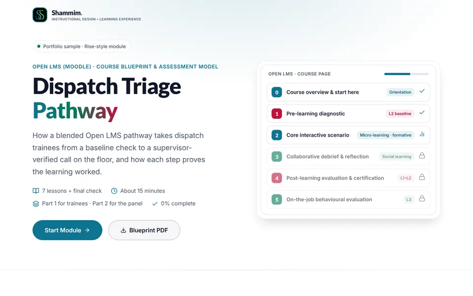
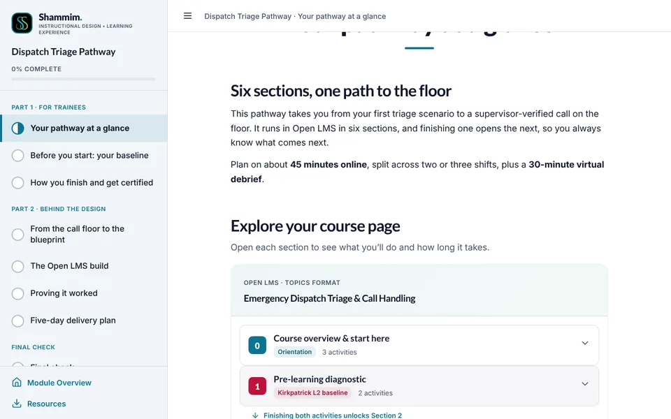
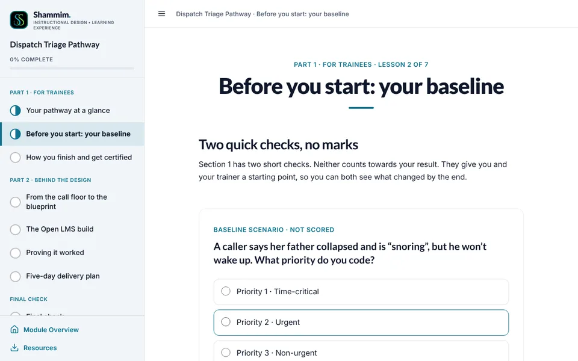
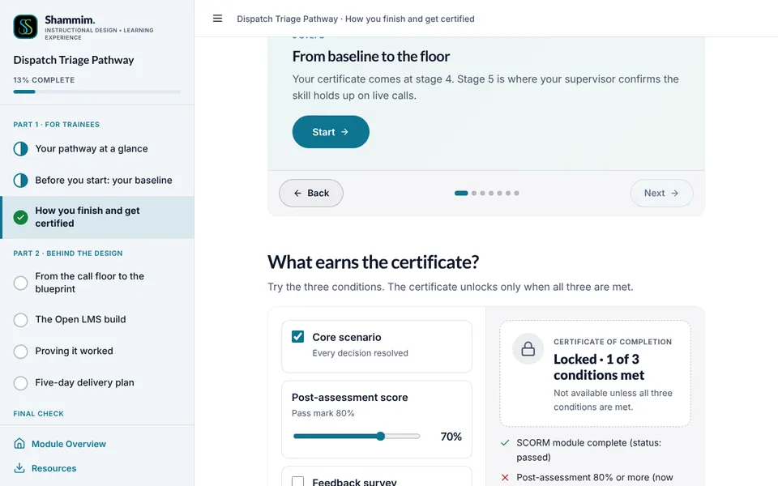
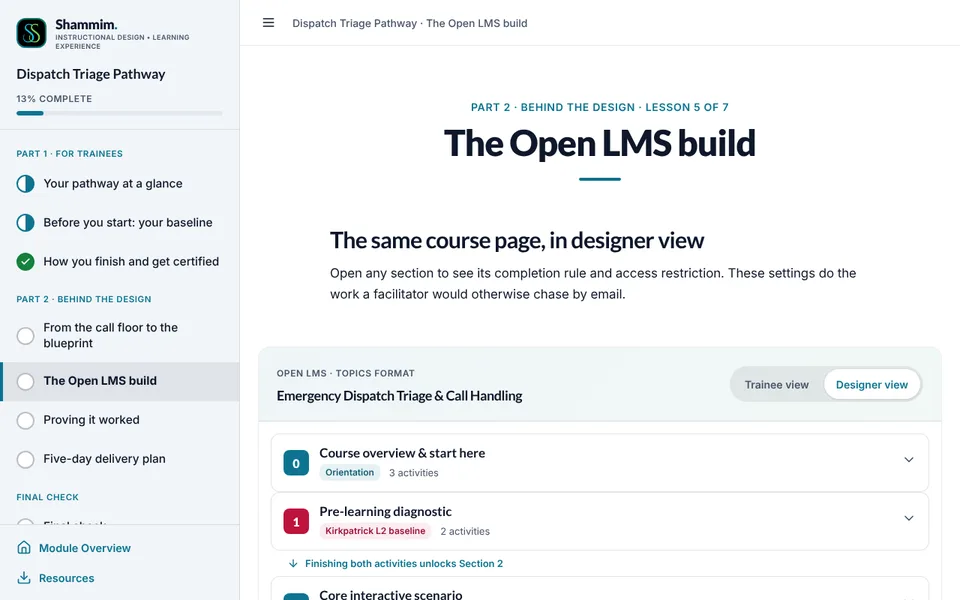
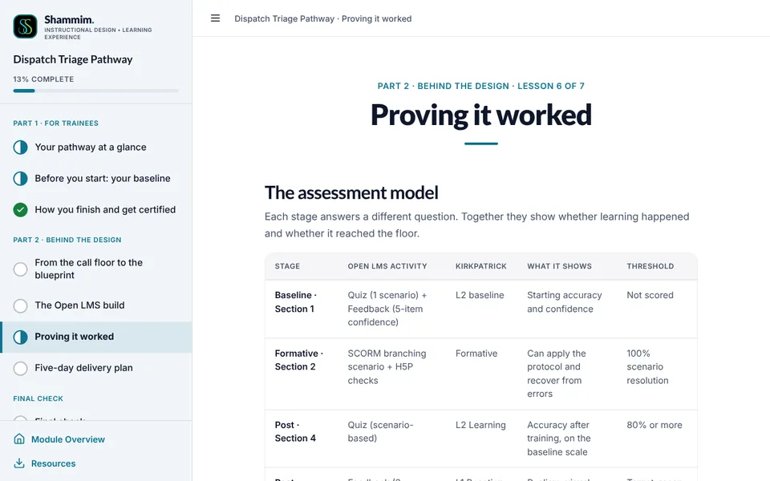
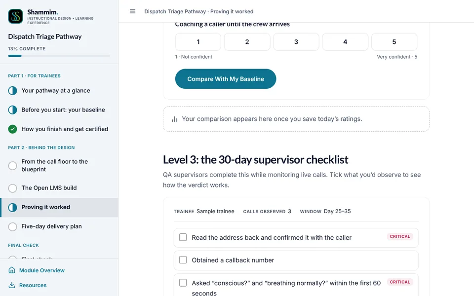

DP-00Module home

Dispatch Triage Pathway
- On screen
- A preview of the Open LMS course page: six sections, each tagged with its role in the pathway.
- Interaction
- Start Module, or download the one-page blueprint PDF.
- Audio
- None.
Open LMS (Moodle) · course blueprint & assessment Workplace project
A blended Open LMS pathway that takes dispatch trainees from a baseline check to a supervisor-verified call on the floor, and shows at every step whether the learning worked.

My role
Workplace project for an emergency dispatch context. Names, addresses, incident numbers and talkgroups are fictional, and the protocols are simplified for learning. They are not the operational procedures of any emergency service.
Dispatch trainees misclassify high-priority triage codes under shift pressure, and the organisation needs pre- and post-learning assessment that shows whether training worked on the floor, not just in the course.
A blended pathway: baseline checks, a branching SCORM scenario, a peer forum and live debrief, a post-assessment and certificate, then a supervisor checklist at day 30. Moodle completion rules gate each step.
Kirkpatrick Levels 1–3 built into the course page: baseline and post-quiz on matching scenarios and confidence items, a feedback survey, gradebook pass mark and a 30-day observation checklist.
An explorable Moodle course page with trainee and designer views, a certificate-unlock simulator, a pre/post confidence comparison and a working supervisor checklist with a competency verdict.
| Unit | Title | Objective (the learner can…) | Evidence |
|---|---|---|---|
| Section 0 | Course overview & start here | Find your way around the course and the app. | Page, syllabus PDF and announcements: completion on view |
| Section 1 | Pre-learning diagnostic | Set a baseline for triage accuracy and confidence. | Quiz (1 case study) + Feedback (5-item confidence); unlocks Section 2 |
| Section 2 | Core interactive scenario | Apply the triage and de-escalation protocol in a branching call. | SCORM package, status “passed”, plus quick-reference job aid |
| Section 3 | Collaborative debrief & reflection | Reflect on a hard call with peers and a facilitator. | Forum: 1 post + 2 replies; virtual shift briefing |
| Section 4 | Post-learning evaluation & certification | Show the learning on the baseline scale and earn the certificate. | Quiz 80% or more + 3-question feedback → certificate |
| Section 5 | On-the-job behavioural evaluation | Show the skill holds up on live calls. | 30-day QA supervisor checklist + gradebook scale |
Frames from the built explainer module. The full storyboard below covers every screen and the Moodle settings. Select a screen to see it full size.







Opens in a new tab. Best viewed on a laptop or tablet; also works on phones.